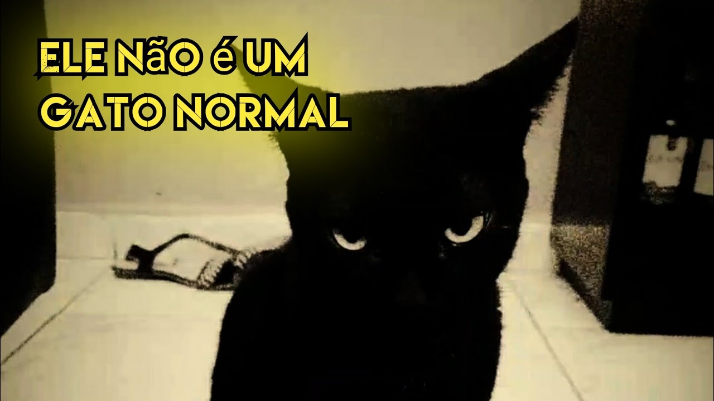

MICHI DEL INFRAMUNDO
Invocado accidentalmente a las 3:33 a.m.

Poderes Oscuros
🔥 Maúlla en latín
🔥 Compila código sin warnings
🔥 Aparece cuando decís "pspsps"
🔥 Te observa mientras dormís
ABRIR PORTAL